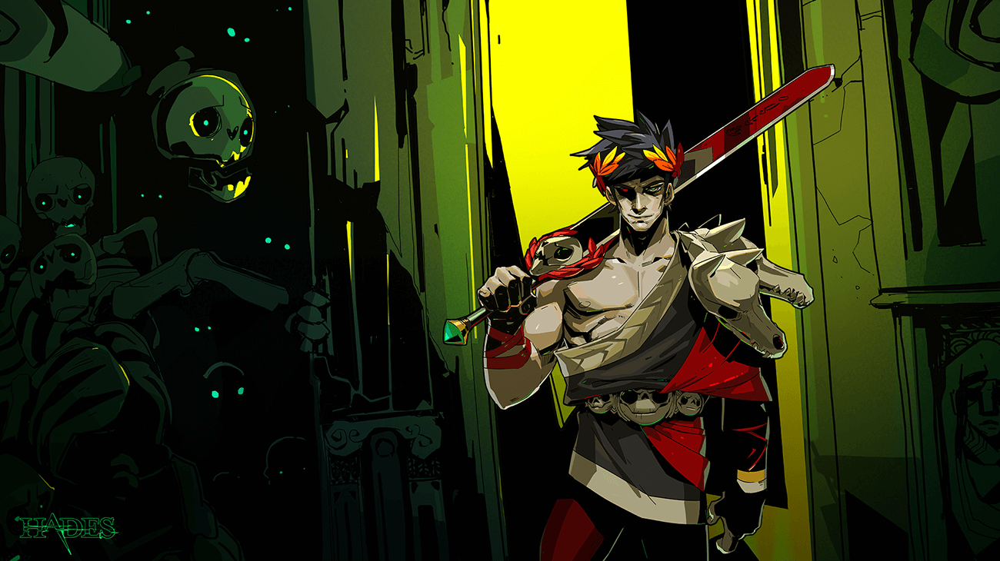

Hades
Hades é um jogo eletrônico de ação e RPG do gênero *roguelike* desenvolvido e publicado pela Supergiant Games. Aclamado pela crítica, o jogo venceu diversos prêmios de "Jogo do Ano" (GOTY) e é conhecido por sua jogabilidade viciante, direção de arte deslumbrante e uma narrativa que se desenrola a cada tentativa de fuga.
A Trama: Fuga do Submundo
Você joga como **Zagreus**, o príncipe do Submundo e filho de Hades. Cansado da vida sob o domínio de seu pai, Zagreus decide escapar de Tártaro e do resto do reino dos mortos para se juntar aos seus parentes no Monte Olimpo.
Sua jornada é auxiliada pelos deuses do Olimpo (como Zeus, Atena, Poseidon e outros), que lhe concedem "Bênçãos" (poderes e melhorias) para ajudá-lo a lutar contra as hordas de inimigos. A morte é uma parte central do jogo: a cada falha, Zagreus é enviado de volta ao Palácio de Hades, onde pode interagir com outros personagens, fortalecer suas habilidades permanentes e tentar a fuga novamente.
Jogabilidade e Recursos
- Ação Frenética: Combate *hack-and-slash* rápido que exige reflexos e estratégia.
- Bênçãos dos Deuses: Combine poderes de diferentes deuses para criar *builds* únicas a cada partida.
- Meta-progressão: Use recursos coletados para desbloquear melhorias permanentes, novas armas (Armas Infernais) e habilidades no Espelho da Noite.
- Narrativa Emergente: A história avança a cada tentativa, seja ela um sucesso ou um fracasso, com milhares de linhas de diálogo.
- Desenvolvedora: Supergiant Games
- Gênero: Roguelike, Ação RPG
- Lançamento: 17 de setembro de 2020
- Plataformas: PC, Nintendo Switch, PlayStation, Xbox